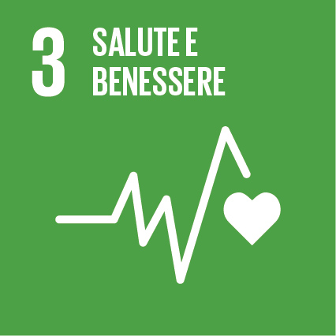

Target: 2027
Status 2025: Raggiunto
SDGs:


Target: 2027
Status 2025: Raggiunto

Nel 2025 BF ha realizzato la prima indagine sul clima aziendale per approfondire la percezione dei dipendenti rispetto all’ambiente di lavoro, ai valori aziendali e alla qualità delle relazioni professionali.
Dal 6 al 20 ottobre è stata somministrata, tramite Great Place to Work, una survey di 60 domande rivolta a impiegati, quadri e dirigenti dei sub-gruppi BF, SIS e BIA. L’analisi ha considerato le aree di credibilità, rispetto, equità, orgoglio e coesione, utilizzate per determinare il Trust Index.
Una prima restituzione dei risultati è stata effettuata nel dicembre 2025 al Direttore Generale e al Direttore HR; all’inizio del 2026 sono seguiti incontri dedicati ai singoli dirigenti per approfondire le evidenze emerse nelle rispettive aree.